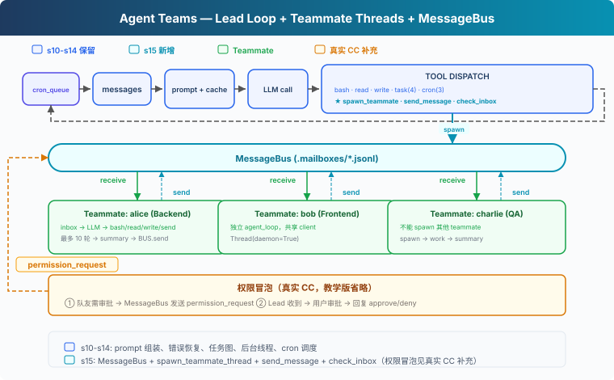
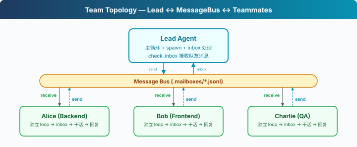

s15: Agent Teams — 一个搞不定，组队来
"一个搞不定, 组队来" — 文件收件箱 + 队友线程。 Harness 层: 团队 — 多 Agent 协作, 消息总线。
On this page
s01 → ... → s13 → s14 → s15 → s16 → s17 → s18 → s19 → s20
"一个搞不定, 组队来" — 文件收件箱 + 队友线程。
Harness 层: 团队 — 多 Agent 协作, 消息总线。
问题
"重构整个后端"涉及认证模块、数据库层、API 路由、测试。一个 Agent 在修 API 路由时，认证模块的细节已经不在上下文里了。上下文窗口就那么大，单个 Agent 的注意力覆盖不了所有模块。
s06 的子 Agent 是临时工，叫来干一件事就走了。但有些任务需要能通信、能协作的队友。
解决方案

教学代码沿用 S14 的能力（prompt 组装、任务系统、后台执行、cron 调度）。为了聚焦团队机制，省略了完整错误恢复、记忆和技能系统。新增三样：MessageBus（文件收件箱）、spawn_teammate_thread（启动队友线程）、inbox 注入（Lead 接收队友消息并注入 history）。
子 Agent vs 队友：
| s06 子 Agent | s15 队友 | |
|---|---|---|
| 生命周期 | 一次性，用完销毁 | 多轮（教学版限 10 轮，真实 CC 用 idle loop） |
| 通信 | 只回传结论 | 异步收件箱，随时通信 |
| 上下文 | 完全隔离 | 通过消息共享信息 |
| 数量 | 一个主 Agent + 偶尔子 Agent | 一个 Lead + 多个队友 |
工作原理

MessageBus: 文件收件箱
每个 Agent（包括 Lead 和队友）有一个 .jsonl 邮箱。发消息 = 往对方的文件里 append 一行 JSON。读消息 = 读文件 + 删除（消费式）：
class MessageBus:
def send(self, from_agent: str, to_agent: str,
content: str, msg_type: str = "message"):
msg = {"from": from_agent, "to": to_agent,
"content": content, "type": msg_type,
"ts": time.time()}
inbox = MAILBOX_DIR / f"{to_agent}.jsonl"
with open(inbox, "a") as f:
f.write(json.dumps(msg) + "\n")
def read_inbox(self, agent: str) -> list[dict]:
inbox = MAILBOX_DIR / f"{agent}.jsonl"
if not inbox.exists():
return []
msgs = [json.loads(line) for line in inbox.read_text().splitlines()]
inbox.unlink() # 消费式：读完删除
return msgs
为什么用文件而不是内存队列？教学版选文件是因为直观、跨线程可观察。真实 CC 也用文件收件箱（~/.claude/teams/{team}/inboxes/），但加了 proper-lockfile 防并发写冲突。教学版的 read_inbox 有 read + unlink 竞态，多线程同时读可能丢消息，对教学场景可以接受。
spawn_teammate_thread: 启动队友
Lead 调用 spawn_teammate 工具启动一个队友。队友跑在自己的 daemon 线程里，有自己的 system prompt、自己的 messages、自己的简化工具集：
def spawn_teammate_thread(name: str, role: str, prompt: str) -> str:
system = f"You are '{name}', a {role}. Use tools to complete tasks."
def run():
messages = [{"role": "user", "content": prompt}]
sub_tools = [bash, read_file, write_file, send_message]
for _ in range(10): # 最多 10 轮
inbox = BUS.read_inbox(name)
if inbox:
messages.append({"role": "user",
"content": f"<inbox>{json.dumps(inbox)}</inbox>"})
response = client.messages.create(
model=MODEL, system=system, messages=messages[-20:],
tools=sub_tools, max_tokens=8000)
# ... 执行工具、处理结果
# 完成后发 summary 给 Lead
BUS.send(name, "lead", summary, "result")
threading.Thread(target=run, daemon=True).start()
关键设计：
- 队友有简化工具集：bash、read、write、send_message。教学版省略了任务和 cron，聚焦通信机制。真实 CC 的队友也有 TaskCreate、TaskUpdate 等工具，任务系统是团队共享的
- 教学版限 10 轮：防止队友无限循环。真实 CC 用 idle loop：跑完一轮后发 idle_notification，等 inbox 消息，收到后继续，直到 shutdown_request 才退出
- 完成后自动汇报：BUS.send(name, "lead", summary) 把最终结果发到 Lead 的收件箱
Lead 的 inbox 注入
Lead 在每轮主循环结束后检查收件箱。队友发来的消息注入到 history 里，让 LLM 能看到并做出反应：
# 主循环结束后
inbox = BUS.read_inbox("lead")
if inbox:
inbox_text = "\n".join(
f"From {m['from']}: {m['content'][:200]}" for m in inbox)
history.append({"role": "user",
"content": f"[Inbox]\n{inbox_text}"})
教学版在用户输入循环外注入。CC 更精细，Lead 的 useInboxPoller 每 1 秒检查一次，有消息就提交为新的 turn，不需要等用户输入。
权限冒泡
教学版省略了权限冒泡。真实 CC 的流程（permissionSync.ts、useSwarmPermissionPoller.ts）：
- 队友遇到需要审批的操作 → 发
permission_request到 Lead 收件箱 - Lead 的
useInboxPoller检测到请求 → 路由到审批队列 - 用户审批后 → Lead 发
permission_response回队友 - 队友的
useSwarmPermissionPoller（每 500ms 轮询）收到回复 → 继续或拒绝
合起来跑
1. Lead: "搭建后端：一个人搞不定，组队吧"
2. Lead → spawn_teammate("alice", "backend dev", "创建数据库 schema")
3. Lead → spawn_teammate("bob", "frontend dev", "写 API 客户端")
4. alice 线程启动 → 自己的 LLM 调用 → bash "python manage.py migrate"
5. bob 线程启动 → 自己的 LLM 调用 → write_file("client.ts", ...)
6. alice 完成 → BUS.send("alice", "lead", "Schema done: users, orders tables")
7. bob 完成 → BUS.send("bob", "lead", "Client written with types")
8. Lead 下次循环 → inbox 注入 history → LLM 看到 alice 和 bob 的结果
两个队友并行工作。
相对 s14 的变更
| 组件 | 之前 (s14) | 之后 (s15) |
|---|---|---|
| Agent 数量 | 1 | 1 Lead + N 队友线程 |
| 通信 | 无 | MessageBus + .mailboxes/*.jsonl |
| 新类 | — | MessageBus, active_teammates dict |
| 新函数 | — | spawn_teammate_thread, run_send_message, run_check_inbox |
| Lead 工具 | 11 (s14) | + spawn_teammate, send_message, check_inbox (14) |
| 队友工具 | — | bash, read_file, write_file, send_message (4) |
| 权限 | 本地决策 | 教学版省略（真实 CC 有冒泡机制） |
试一下
cd learn-claude-code
python s15_agent_teams/code.py
试试这些 prompt：
Spawn alice as a backend developer. Ask her to create a file called schema.sql with a users table.Check your inbox for alice's result.Spawn bob as a tester. Ask him to check if schema.sql exists and list its contents.
观察重点：Lead 如何启动队友？.mailboxes/ 目录下的 JSONL 文件长什么样？队友完成后 Lead 的 inbox 有没有注入到 history？
接下来
队友能干活、能通信。但如果 Lead 想让 Alice 关机，直接杀线程会留下写到一半的文件。需要一个体面的关机协议：Lead 发 shutdown_request，队友收尾后退出。
s16 Team Protocols → 关机握手与消息约定。
深入 CC 源码
> 以下基于 CC 源码 `spawnMultiAgent.ts`、`useInboxPoller.ts`（969 行）、`useSwarmPermissionPoller.ts`（330 行）、`teammateMailbox.ts`、`teamHelpers.ts` 的完整分析。 ### 一、没有中央消息总线，是文件系统 教学版用 `MessageBus` 类收发消息。CC 的做法更直接，每个 Agent 直接写其他 Agent 的收件箱文件。 收件箱路径：`~/.claude/teams/{teamName}/inboxes/{agentName}.json` 写入时用 `proper-lockfile` 文件锁保证并发安全（最多重试 10 次）。每个文件是一个 JSON 数组，append 新消息时读→追加→写回。 ### 二、15 种消息类型 CC 的团队通信有 15 种结构化消息（`teammateMailbox.ts`）： | 类型 | 方向 | 用途 | |------|------|------| | `plain text` | 双向 | 普通队友间通信 | | `idle_notification` | 队友→Lead | 队友完成一轮工作，进入空闲 | | `permission_request` | 队友→Lead | 队友需要操作审批 | | `permission_response` | Lead→队友 | Lead 审批结果 | | `plan_approval_request` | 队友→Lead | 队友提交计划待审 | | `plan_approval_response` | Lead→队友 | Lead 审批计划 | | `shutdown_request` | Lead→队友 | 请求体面关机 | | `shutdown_approved` | 队友→Lead | 确认关机 | | `shutdown_rejected` | 队友→Lead | 拒绝关机（附原因） | | `task_assignment` | Lead→队友 | 分配任务 | | `team_permission_update` | Lead→队友 | 广播权限变更 | | `mode_set_request` | Lead→队友 | 修改队友的权限模式 | | `sandbox_permission_*` | 双向 | 网络权限请求/回复 | | `teammate_terminated` | 系统 | 队友被移除通知 | 文本消息被包装在 `{
"name": "my-team",
"leadAgentId": "lead@my-team",
"members": [{
"agentId": "researcher@my-team",
"name": "researcher",
"agentType": "general-purpose",
"color": "blue",
"isActive": true
}]
}